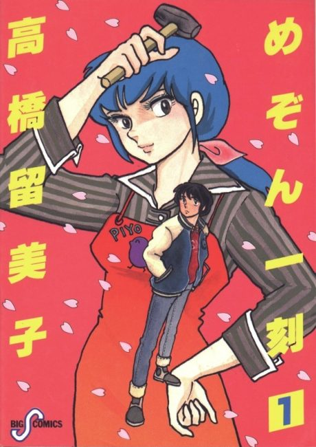

Anime
Anime
MangaMaison Ikkoku
めぞん一刻
The anime takes the story to Done.
7.8AniList
—Animeter
96 epEpisodes
Watch order
In airing order. Episode numbers on this site count straight through every season, so season 2 starts at episode —.
1
1986 · TV
Maison Ikkoku
Episodes1–9696 ep
Films, OVAs and specials
Not counted in the episode numbers above.
·
1988 · Film
Maison Ikkoku: Final Chapter
Sources: AniList